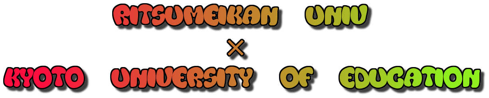

Fair Trade MAP in preparation
Enrich the city of SDGs, Kyoto with FairTrade
私たちは、SDGsに興味を持っている大学生であり、少しでも京都にフェアトレードを普及させるため、本プロジェクトを計画した。
We are university students who are interested in SDGs, and planned this project to spread fair trade in Kyoto as much as possible.
主な目的は、SDGsが世界で重要視されている中、日本人の学生のため、SDGs分野のフェアトレードについて、無料で問題を提供する。
The main purpose is to provide problems for Japanese students to understand about fair trade in the SDGs field, while SDGs are regarded as important in the world.
さらに、京都市内にある全てのフェアトレードの店をMAPを使って見えるかし、京都に住んでいる学生や市民たちに無料で提供し、フェアトレードの店を活性化させる。
In addition, all fair trade shops in Kyoto city can be viewed using the MAP, and provided to students and citizens living in Kyoto free of charge to activate the fair trade shops.
本プロジェクトは、京都のフェアトレードの活性化に焦点を合わせたため、全ての寄付金は、京都のフェアトレード活性化に使用する
This project focused on activating Kyoto's fair trade, so all donations will be used to activate Kyoto's fair trade.